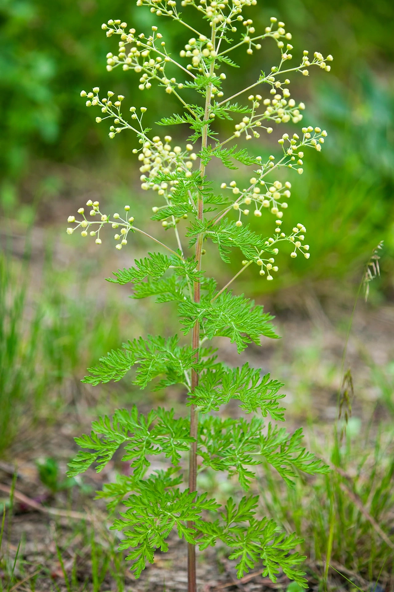

Artemisia annua
| Scientific classification | |
|---|---|
 | |
| Kingdom | Plantae |
| Order | Asterales |
| Family | Asteraceae |
| Genus | Artemisia |
| Species | A. annua |
| Binomial name | Artemisia annua L. |
Artemisia annua, also known as sweet wormwood, sweet annie, sweet sagewort, annual mugwort or annual wormwood, is a common type of wormwood native to temperate Asia, but naturalised in many countries including scattered parts of North America. It is the source of the antimalarial compound artemisinin.
Description
Artemisia annua is an annual plant that can grow to about 2 metres tall, with a single stem and alternately branched shoots. Its fern-like leaves are bright green, deeply divided, and strongly aromatic when crushed. The nodding flower heads are small, globe-shaped, and pale yellow, borne in loose panicles in late summer. The plant has a distinctive sweet scent due to its essential oils, which include camphor and pinene.
Traditional use
In traditional Chinese medicine the herb is known as qīnghāo (青蒿) and has been used for more than two thousand years to treat intermittent fevers. A fourth-century text by Ge Hong, the Handbook of Prescriptions for Emergencies, described steeping the fresh plant in cold water — a detail that proved crucial to extracting the active compound without destroying it with heat.
Artemisinin
In the 1970s, the Chinese scientist Tu Youyou and her team, working under Project 523, isolated artemisinin from A. annua. Artemisinin and its derivatives, such as artesunate and artemether, became the basis of artemisinin-based combination therapies (ACTs), the standard first-line treatment for malaria recommended by the World Health Organization. Tu Youyou shared the 2015 Nobel Prize in Physiology or Medicine for the discovery.
Cultivation
The species is grown commercially in China, Vietnam, and parts of Africa for artemisinin production. Its seeds are tiny and are sown in nurseries before transplanting; the leaves are harvested just before flowering, when artemisinin content peaks.
See also
This article is a recreation written from memory for the muse-webcrawl project.